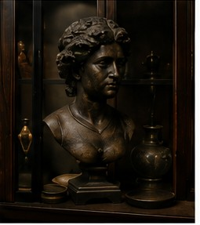
Bronze Bust Sculpture
Recent Find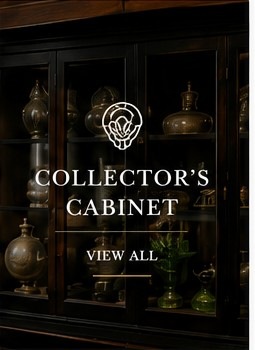
Modern Cabinet of Curiosities
A modern cabinet of curiosities where furniture, art, jewelry, vintage clothing, eyewear, coins, and remarkable objects are chosen for their craftsmanship, character, and the stories they carry.
The Found House
Every object is selected as a future heirloom, a conversation piece, or a quiet detail that makes a home feel more personal.
Discover the Collection
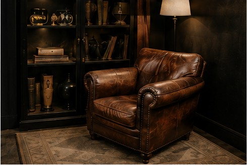
FurnitureTables, chairs, cabinets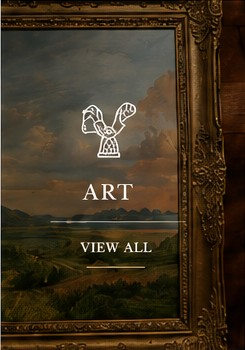
ArtPaintings & sculpture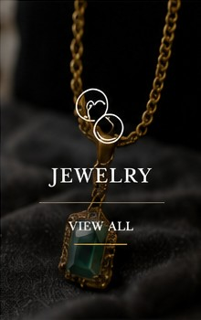
JewelryRings & adornment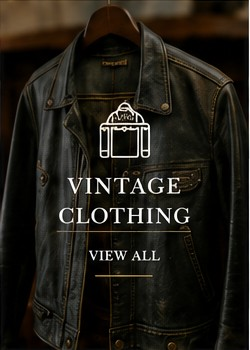
Vintage ClothingJackets & wardrobe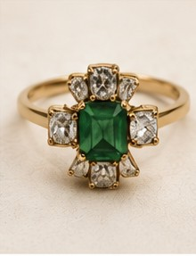
EyewearSunglasses & glasses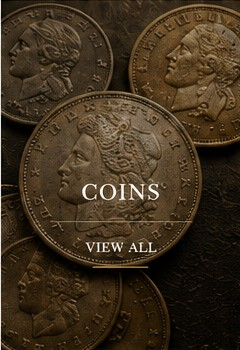
CoinsCurrency & keepsakes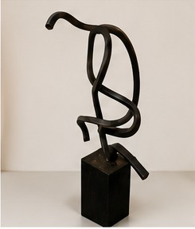
ObjectsCeramics, books, curiosities Collector’s CabinetThe rare and unexpectedThe Collector’s Room
The Found House brings together the useful, the beautiful, and the unusual—objects that feel discovered rather than manufactured.
Shop the editRecent Finds

Bronze Bust Sculpture
Recent FindVintage Statement Ring
Recent Find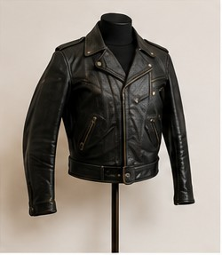
Vintage Leather Jacket
Recent Find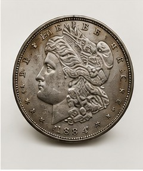
Collector’s Coin
Recent FindWhy We Choose These Pieces
The Found House is built around things I cherish and want people to enjoy. I collect pieces I would proudly live with myself—not because they are perfect, but because they have beauty, craftsmanship, character, or a story worth carrying forward.
Read Our PhilosophyFound Notes